Homework 4 solutions#
import numpy as np
import matplotlib.pyplot as plt
# Visualize matrices as a color map
def plot_matrices(A,titles=[]):
n = len(A)
if titles==[]:
titles = [""]*n
if n>4:
nx = 4
else:
nx = n
for j in range(int(np.floor(n/4))+1):
plt.clf()
plt.figure(figsize=(nx*4,4))
jmax = 4*(j+1)
if jmax > n:
jmax = n
for i,AA in enumerate(A[4*j:jmax]):
plt.subplot(1, nx, i+1)
plt.imshow(AA)
plt.colorbar()
plt.title(titles[4*j + i])
plt.show()
1. More on SVD#
# Visualize matrices as a color map
def plot_matrices(A,titles=[]):
n = len(A)
if titles==[]:
titles = [""]*n
if n>4:
nx = 4
else:
nx = n
for j in range(int(np.floor(n/4))+1):
plt.clf()
plt.figure(figsize=(nx*4,4))
jmax = 4*(j+1)
if jmax > n:
jmax = n
for i,AA in enumerate(A[4*j:jmax]):
plt.subplot(1, nx, i+1)
plt.imshow(AA)
plt.colorbar()
plt.title(titles[4*j + i])
plt.show()
m=10; n=6
A = np.random.rand(m*n).reshape(m,n)
U, Sdiag, VT = np.linalg.svd(A, full_matrices=False)
plot_matrices([U,VT])
print("Singular values are: ", Sdiag)
Ak = np.zeros((n, m, n))
for k in range(n):
Ak[k] = np.outer(U[:,k], VT[k,:])
plot_matrices(Ak[:],["S%d" % (i,) for i in range(n)])
Ar = np.zeros_like(A)
for k in range(n):
Ar = Ar + Sdiag[k] * Ak[k]
plot_matrices([A, Ar, A-Ar])
<Figure size 640x480 with 0 Axes>
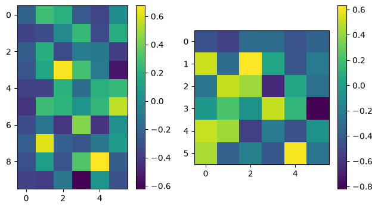
Singular values are: [3.53108347 1.1830942 0.94240142 0.76145774 0.59077482 0.33489094]
<Figure size 640x480 with 0 Axes>
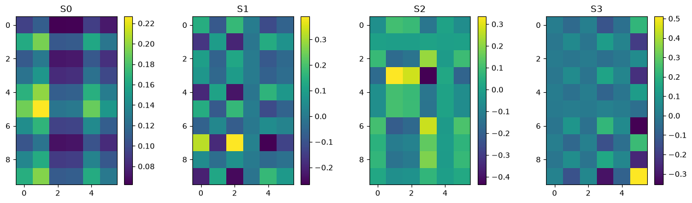
<Figure size 640x480 with 0 Axes>
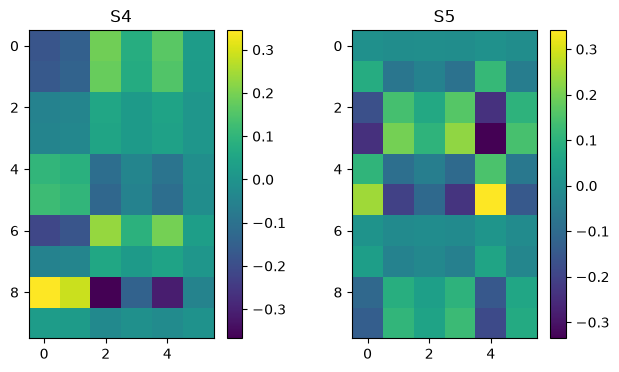
<Figure size 640x480 with 0 Axes>
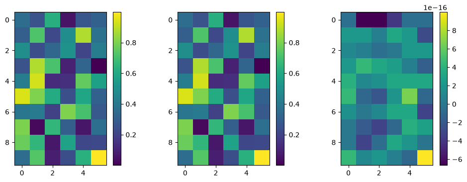
from PIL import Image
img = Image.open('github_logo.png')
A = np.asarray(img)[:,:,1]
plot_matrices([A])
m,n = np.shape(A)
print('shape = ', m,n)
U, Sdiag, VT = np.linalg.svd(A, full_matrices=False)
nk = len(Sdiag)
plt.clf()
plt.plot(np.linspace(0,nk,nk),Sdiag,'.')
plt.yscale('log')
plt.show()
Ak = np.zeros((n, m, n))
for k in range(nk):
Ak[k] = np.outer(U[:,k], VT[k,:])
# plot some of the matrices
plot_matrices(Ak[:12],["S%d" % (i,) for i in range(n)])
<Figure size 640x480 with 0 Axes>
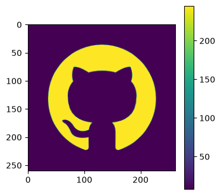
shape = 260 262
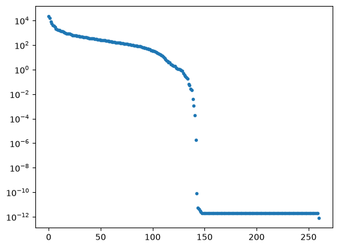
<Figure size 640x480 with 0 Axes>
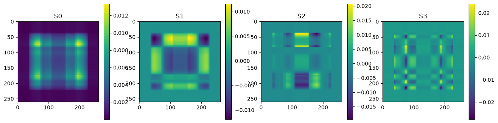
<Figure size 640x480 with 0 Axes>
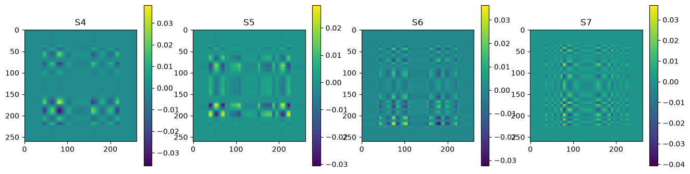
<Figure size 640x480 with 0 Axes>
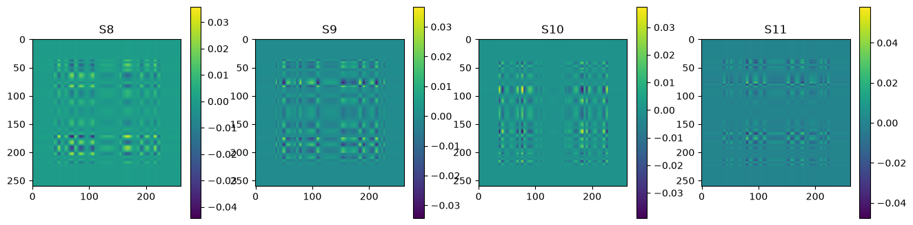
<Figure size 640x480 with 0 Axes>
<Figure size 1600x400 with 0 Axes>
# now show the reconstructed images with different numbers of input matrices
for kmax in range(2,61,5):
Ar = np.zeros_like(A)
for k in range(kmax):
Ar = Ar + Sdiag[k] * Ak[k]
plot_matrices([A, Ar, A-Ar], titles=["%d images" % (kmax,), "", ""])
<Figure size 640x480 with 0 Axes>
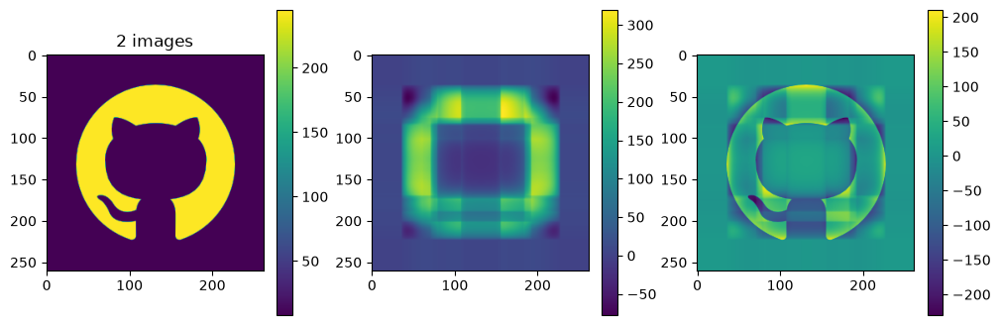
<Figure size 640x480 with 0 Axes>
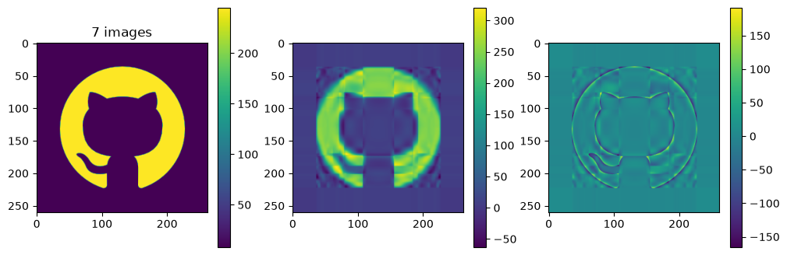
<Figure size 640x480 with 0 Axes>
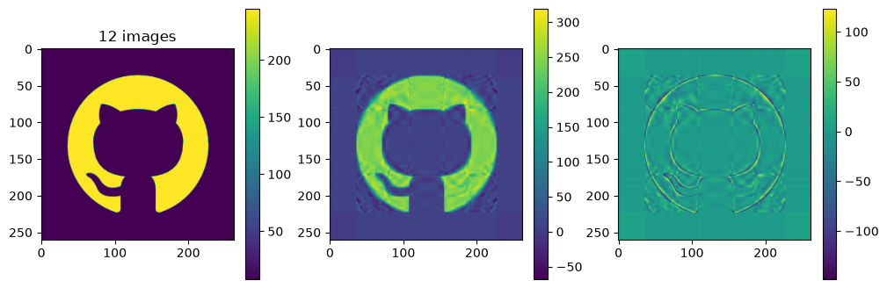
<Figure size 640x480 with 0 Axes>
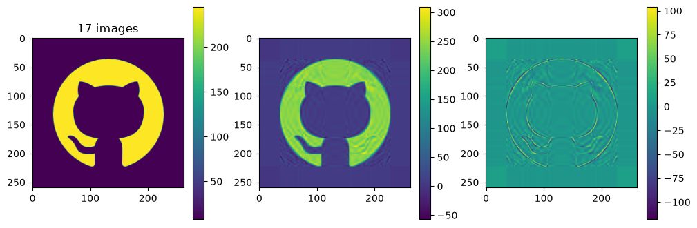
<Figure size 640x480 with 0 Axes>
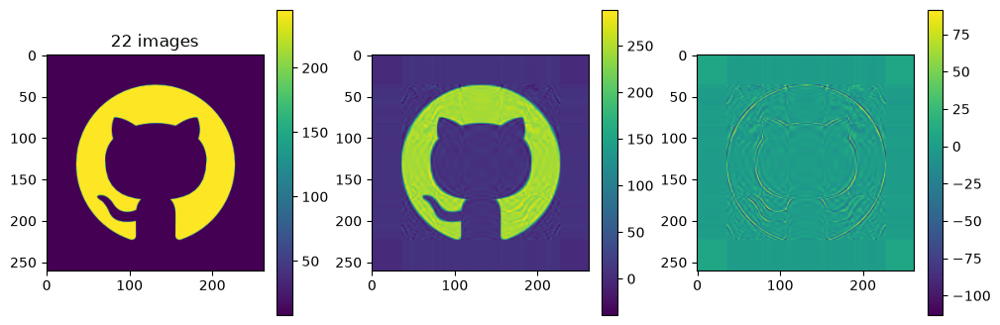
<Figure size 640x480 with 0 Axes>
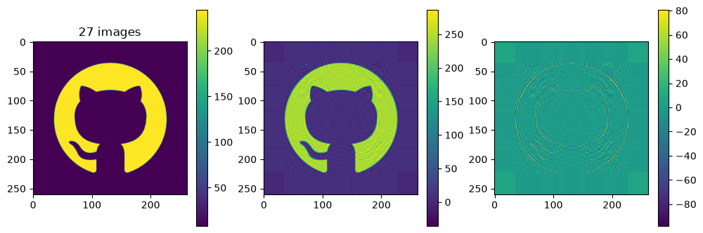
<Figure size 640x480 with 0 Axes>
<Figure size 640x480 with 0 Axes>
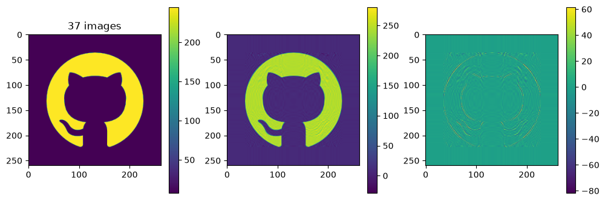
<Figure size 640x480 with 0 Axes>
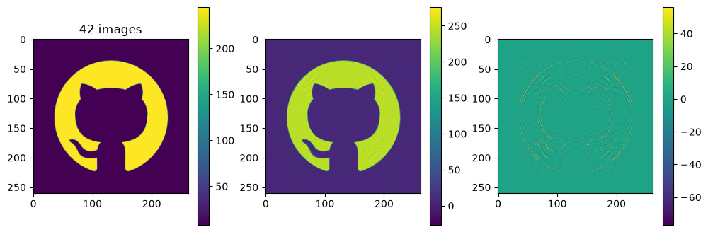
<Figure size 640x480 with 0 Axes>
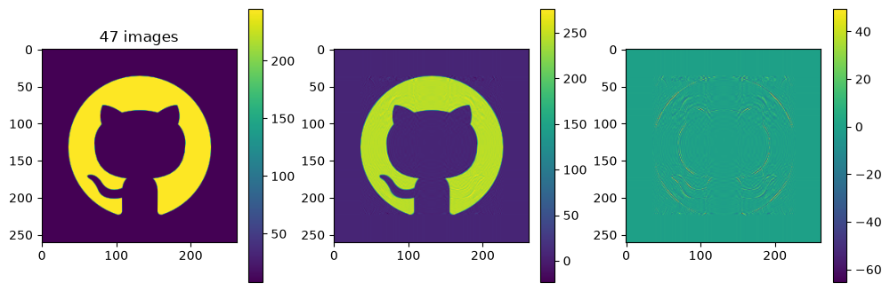
<Figure size 640x480 with 0 Axes>
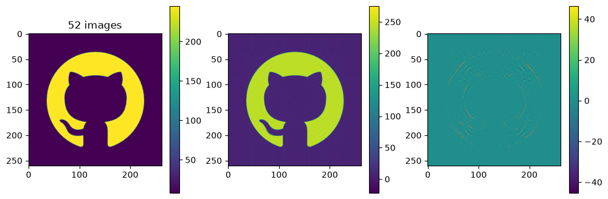
<Figure size 640x480 with 0 Axes>
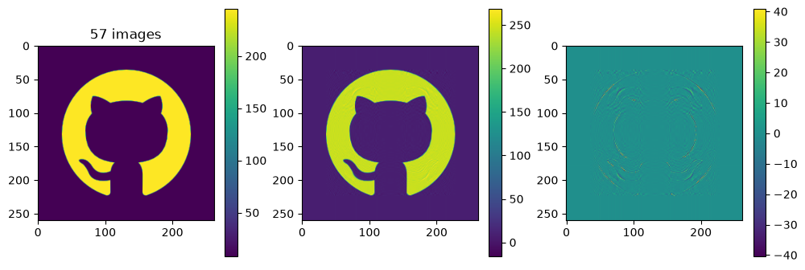
print(len(U[:,0]), len(VT[0,:]), nk)
260 262 260
print(20 * (1+260+262), 260*262, (262*260)/(20 * (1+260+262)))
10460 68120 6.512428298279159
Each of the component matrices is constructed from two vectors of length \(m\) and \(n\), so the total storage is \((m+n)\) for those vectors. If we keep \(N\) component matrices, we need \(N\) of these vectors and also \(N\) singular values, ie. a total of \(N(m+n+1)\) numbers. This should be compared to \(m\times n\) for the original matrix.
So in this example, it looks like about 20 components gives a reasonable approximation of the image – so we need \(20\times (1+260+262)=10460\) numbers.
The compression factor is therefore \((260\times 262)/10460\approx 6.5\) compared to storing the full \(m\times n\) matrix.
2. Fitting planetary orbits#
import numpy as np
import matplotlib.pyplot as plt
def rv(t, P, a):
# Calculates the radial velocity of a star orbited by a planet
# at the times in the vector t
# extract the orbit parameters
# P, t and tp in days, mp in Jupiter masses, v0 in m/s
mp, e, omega, tp, v0 = a
# mean anomaly
M = 2*np.pi * (t-tp) / P
# velocity amplitude
K = 204 * P**(-1/3) * mp / np.sqrt(1.0-e*e) # m/s
# solve Kepler's equation for the eccentric anomaly E - e * np.sin(E) = M
# Iterative method from Heintz DW, "Double stars", Reidel, 1978
# first guess
E = M + e*np.sin(M) + ((e**2)*np.sin(2*M)/2)
while True:
E0 = E
M0 = E0 - e*np.sin(E0)
E = E0 + (M-M0)/(1.0 - e*np.cos(E0))
if np.max(np.abs((E-E0))) < 1e-6:
break
# evaluate the velocities
theta = 2.0 * np.arctan( np.sqrt((1+e)/(1-e)) * np.tan(E/2))
vel = v0 + K * ( np.cos(theta + omega) + e * np.cos(omega))
return vel
def rv_model(t, P, a):
v = rv(t, P, a)
A = np.zeros([len(t), len(a)])
eps = 1e-8
b = np.copy(a) * (1 + eps)
v0 = rv(t, P, np.array([b[0],a[1],a[2],a[3],a[4]]))
v1 = rv(t, P, np.array([a[0],b[1],a[2],a[3],a[4]]))
v2 = rv(t, P, np.array([a[0],a[1],b[2],a[3],a[4]]))
v3 = rv(t, P, np.array([a[0],a[1],a[2],b[3],a[4]]))
v4 = rv(t, P, np.array([a[0],a[1],a[2],a[3],b[4]]))
A[:, 0] = (v0 - v) / (b[0]-a[0])
A[:, 1] = (v1 - v) / (b[1]-a[1])
A[:, 2] = (v2 - v) / (b[2]-a[2])
A[:, 3] = (v3 - v) / (b[3]-a[3])
A[:, 4] = (v4 - v) / (b[4]-a[4])
return v, A
# Observations
# These are for HD145675 from Butler et al. 2003
tobs, vobs, eobs = np.loadtxt('rvs.txt', unpack=True)
# initial guess
# P, mp, e, omega, tp, v0
P = 1724
a0 = np.array([1.0, 1e-3, 1e-3, 1e-3, 1e-3])
a = a0
err = 1.0
lam = 1e-3
while err > 1e-6:
v, A = rv_model(tobs, P, a)
A[:, 0] = A[:, 0] / eobs
A[:, 1] = A[:, 1] / eobs
A[:, 2] = A[:, 2] / eobs
A[:, 3] = A[:, 3] / eobs
A[:, 4] = A[:, 4] / eobs
r = (v-vobs)/eobs
lhs = A.T@A
lhs = lhs@(np.identity(len(a))*(1+lam))
rhs = -A.T@r
da = np.linalg.inv(lhs)@rhs
# artificially reduce the step to not overshoot e=1
a1 = a + 0.2*da
#print(a1, a)
v1, A1 = rv_model(tobs, P, a1)
A1[:, 0] = A1[:, 0] / eobs
A1[:, 1] = A1[:, 1] / eobs
A1[:, 2] = A1[:, 2] / eobs
A1[:, 3] = A1[:, 3] / eobs
A1[:, 4] = A1[:, 4] / eobs
r1 = (v1-vobs)/eobs
err = np.sum(r**2)
err1 = np.sum(r1**2)
print("err = %lg, a=(%lg, %lg, %lg, %lg, %lg), lam = %lg" % (err1 ,a1[0], a1[1], a1[2], a1[3], a1[4], lam))
if err1 > err:
lam = lam * 10
else:
lam = lam / 10
a = a1
if (err-err1) < 0.1:
break
print("Best-fit parameters: M = %lg, e = %lg, omega = %lg, tP = %lg, v0 = %lg " %
(a[0], a[1], a[2] % np.pi, a[3], a[4]))
err = 27352.5, a=(0.783054, -0.369287, 1.4289, 130.96, -5.54259), lam = 0.001
err = 19589.1, a=(1.4266, -0.147589, 3.32163, 433.31, -9.33025), lam = 0.0001
err = 12324.8, a=(2.08735, -0.28571, 3.82486, 595.558, -13.0721), lam = 1e-05
err = 7947.47, a=(2.62761, -0.3021, 3.55111, 527.698, -16.1418), lam = 1e-06
err = 5093.52, a=(3.07083, -0.323861, 3.47471, 509.19, -18.606), lam = 1e-07
err = 3275.93, a=(3.42746, -0.33676, 3.4445, 502.037, -20.5762), lam = 1e-08
err = 2117.05, a=(3.71336, -0.344832, 3.42891, 498.392, -22.1519), lam = 1e-09
err = 1377.17, a=(3.9423, -0.350217, 3.41967, 496.249, -23.4123), lam = 1e-10
err = 904.418, a=(4.12553, -0.353983, 3.41372, 494.877, -24.4206), lam = 1e-11
err = 602.192, a=(4.27215, -0.356707, 3.40969, 493.949, -25.2273), lam = 1e-12
err = 408.921, a=(4.38944, -0.358727, 3.40686, 493.297, -25.8727), lam = 1e-13
err = 285.299, a=(4.48327, -0.360252, 3.40481, 492.827, -26.3891), lam = 1e-14
err = 206.214, a=(4.55833, -0.36142, 3.4033, 492.481, -26.8022), lam = 1e-15
err = 155.617, a=(4.61837, -0.362325, 3.40218, 492.222, -27.1327), lam = 1e-16
err = 123.242, a=(4.6664, -0.36303, 3.40133, 492.027, -27.3972), lam = 1e-17
err = 102.526, a=(4.70481, -0.363584, 3.40069, 491.879, -27.6088), lam = 1e-18
err = 89.2691, a=(4.73553, -0.364022, 3.40019, 491.765, -27.7781), lam = 1e-19
err = 80.7857, a=(4.76011, -0.364369, 3.39981, 491.677, -27.9135), lam = 1e-20
err = 75.3567, a=(4.77976, -0.364644, 3.39952, 491.609, -28.0219), lam = 1e-21
err = 71.8823, a=(4.79548, -0.364864, 3.39929, 491.557, -28.1086), lam = 1e-22
err = 69.6587, a=(4.80806, -0.365039, 3.39911, 491.516, -28.178), lam = 1e-23
err = 68.2357, a=(4.81811, -0.365179, 3.39898, 491.484, -28.2335), lam = 1e-24
err = 67.325, a=(4.82616, -0.365292, 3.39887, 491.459, -28.278), lam = 1e-25
err = 66.7421, a=(4.83259, -0.365382, 3.39879, 491.44, -28.3135), lam = 1e-26
err = 66.369, a=(4.83773, -0.365454, 3.39872, 491.424, -28.3419), lam = 1e-27
err = 66.1303, a=(4.84185, -0.365512, 3.39867, 491.413, -28.3647), lam = 1e-28
err = 65.9775, a=(4.84514, -0.365558, 3.39863, 491.403, -28.3829), lam = 1e-29
err = 65.8797, a=(4.84777, -0.365596, 3.3986, 491.396, -28.3975), lam = 1e-30
Best-fit parameters: M = 4.84777, e = -0.365596, omega = 0.257008, tP = 491.396, v0 = -28.3975
t = np.linspace(tobs[0], tobs[-1], 1000)
plt.plot(t, rv(t,P, a), 'C0')
plt.plot(tobs, vobs, 'C1.')
plt.errorbar(tobs, vobs, eobs, fmt='none', ecolor='C1')
plt.ylabel(r'$v$')
plt.xlabel(r'$t$')
plt.show()
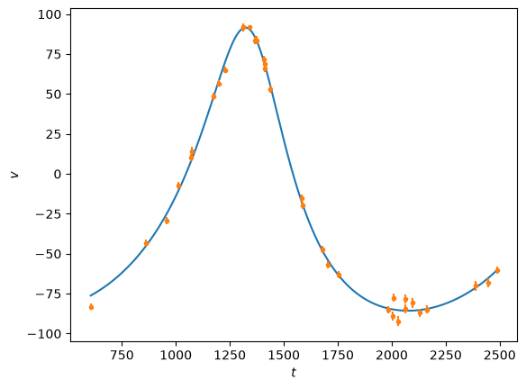
Note that the eccentricity from the fit comes out negative, this is because of a degeneracy between \(e\) and the angles \(\omega_P\) and \(t_P\). By adjusting these, we can fix the eccentricity to be positive:
t = np.linspace(tobs[0], tobs[-1], 1000)
# Change the sign of eccentricity
a2 = np.copy(a)
a2[1] = -a[1]
plt.plot(t, rv(t,P, a2), 'C0', label=r'Change sign of $e$ to positive')
a3 = np.copy(a)
a3[1] = -a[1]
a3[3] = (a[3] + P/2) % P
a3[2] = (a[2] + np.pi) % (2*np.pi)
plt.plot(t, rv(t,P, a3), 'C2', label=r'Also adjust $\omega+\pi$, $t_P+P/2$')
plt.plot(tobs, vobs, 'C1.')
plt.errorbar(tobs, vobs, eobs, fmt='none', ecolor='C1')
plt.ylabel(r'$v$')
plt.legend()
plt.xlabel(r'$t$')
plt.show()
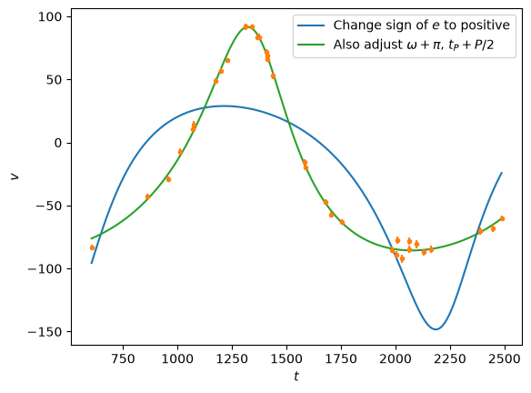
# Calculate the covariance matrix
v, A = rv_model(tobs, P, a3)
A[:, 0] = A[:, 0] / eobs
A[:, 1] = A[:, 1] / eobs
A[:, 2] = A[:, 2] / eobs
A[:, 3] = A[:, 3] / eobs
A[:, 4] = A[:, 4] / eobs
C = np.linalg.inv(A.T@A)
To compare with MCMC, let’s regenerate the samples (I copied the code directly from the exercise here: https://andrewcumming.github.io/phys512/metropolis_solutions.html)
seed = 56123
rng = np.random.default_rng(seed)
def f(x, tobs, vobs, eobs):
chisq = np.sum(((vobs-rv(tobs, P, x))/eobs)**2)
return -chisq/2
# Observations
# These are for HD145675 from Butler et al. 2003
tobs, vobs, eobs = np.loadtxt('rvs.txt', unpack=True)
# Number of samples to generate
N = 10**5
x = np.zeros((N, 5))
# initial guess
# P, mp, e, omega, tp, v0
P = 1724
x[0] = [1.0, 0.0, 0.0, 0.0, 0.0]
# and the widths for the jumps
widths = (0.03, 0.03, 0.03, 3.0, 1.0)
count = 0
for i in range(N-1):
# Proposal
ii = np.random.randint(0, 5)
x_try = np.copy(x[i])
x_try[ii] += rng.normal(scale = widths[ii])
#x_try[2] = (x_try[2]) % 1 # keep e between zero and 1
# Accept the move or stay where we are
u = rng.uniform()
if u <= np.exp(f(x_try, tobs,vobs,eobs) - f(x[i], tobs,vobs,eobs)):
x[i+1] = np.copy(x_try)
count = count + 1
else:
x[i+1] = np.copy(x[i])
print("Acceptance fraction = %g" % (count/N,))
# Reject the burn in phase
x = x[int(0.3*N):]
# Move the angles to within 0 to 2pi
x[:,2] = x[:,2] % (2*np.pi)
x[:,3] = x[:,3] % P
Acceptance fraction = 0.3967
# Plot to make sure everything looks ok
titles = (r'$M/MJ$', r'$e$', r'$\omega$', r'$t_P$', r'$v_0$')
for i, title in enumerate(titles):
plt.subplot(2,3,i+1)
plt.title(title)
plt.hist(x[:, i], density=True, bins=30)
plt.tight_layout()
plt.show()
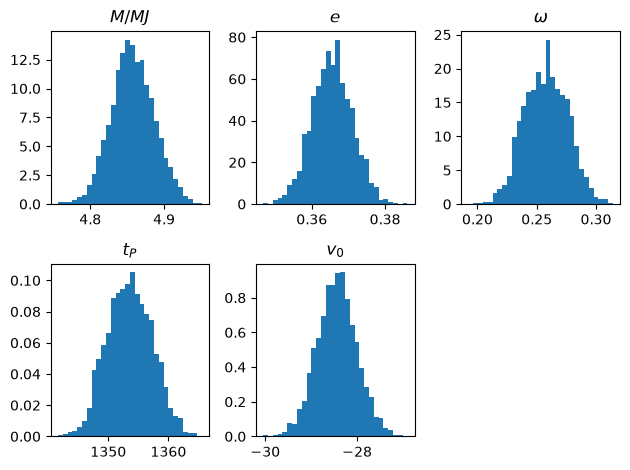
# compare with the least squares results
print('%12s %12s %12s %12s %12s %12s' % ('parameter', 'MCMC', 'LS', 'MCMC var', 'LS var', 'frac diff'))
for i in range(5):
print("%12s %12lg %12lg %12lg %12lg %12lg" %
(titles[i], np.mean(x[:,i]), a3[i], np.var(x[:,i]), C[i,i],
np.divide(np.var(x[:,i]) - C[i,i], np.var(x[:,i]) + C[i,i])))
parameter MCMC LS MCMC var LS var frac diff
$M/MJ$ 4.85764 4.84777 0.000842052 0.000848373 -0.0037391
$e$ 0.365536 0.365596 3.02334e-05 2.87974e-05 0.0243251
$\omega$ 0.257808 0.257008 0.000331497 0.000377659 -0.0650944
$t_P$ 1353.59 1353.4 13.9013 16.2083 -0.0766174
$v_0$ -28.4376 -28.3975 0.188001 0.183564 0.0119409
Good agreement! Let’s also check the full covariance matrix:
C_mcmc = np.cov(x.T)
with np.printoptions(precision=3, suppress=False):
print(C,"\n\n",C_mcmc)
plot_matrices([np.divide(C_mcmc-C, C_mcmc+C)])
[[ 8.484e-04 -6.039e-05 -5.154e-05 -1.316e-02 -4.161e-03]
[-6.039e-05 2.880e-05 -8.178e-06 -2.969e-03 -3.427e-04]
[-5.154e-05 -8.178e-06 3.777e-04 7.292e-02 4.868e-04]
[-1.316e-02 -2.969e-03 7.292e-02 1.621e+01 6.860e-02]
[-4.161e-03 -3.427e-04 4.868e-04 6.860e-02 1.836e-01]]
[[ 8.421e-04 -6.520e-05 -4.001e-05 -1.040e-02 -4.147e-03]
[-6.520e-05 3.023e-05 -6.711e-06 -2.606e-03 -3.876e-04]
[-4.001e-05 -6.711e-06 3.315e-04 6.293e-02 4.147e-04]
[-1.040e-02 -2.606e-03 6.293e-02 1.390e+01 4.737e-02]
[-4.147e-03 -3.876e-04 4.147e-04 4.737e-02 1.880e-01]]
<Figure size 640x480 with 0 Axes>
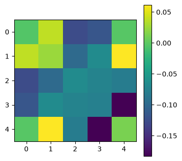